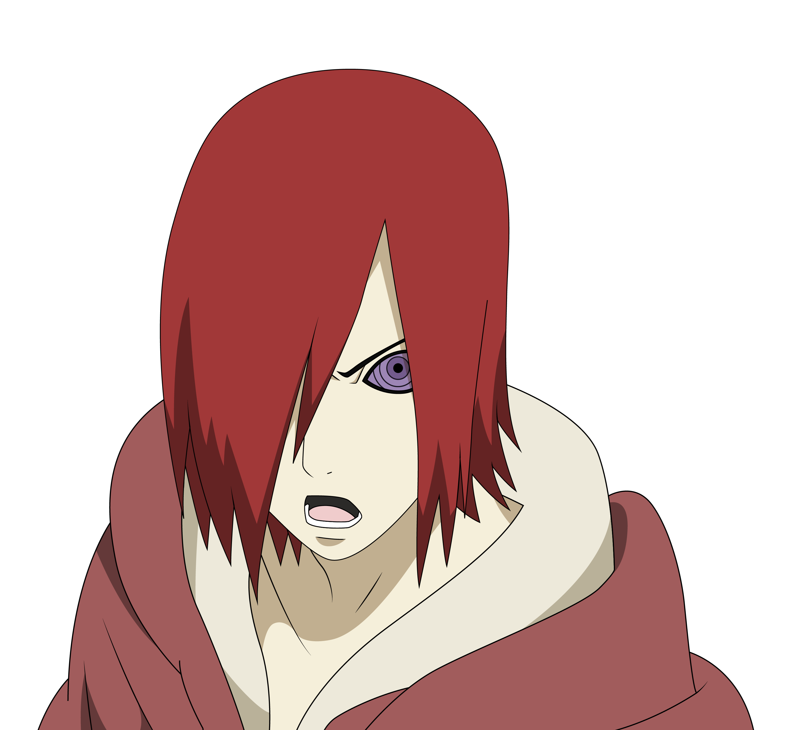
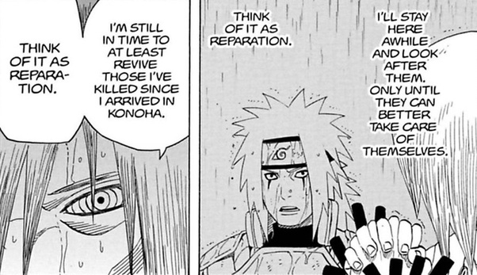
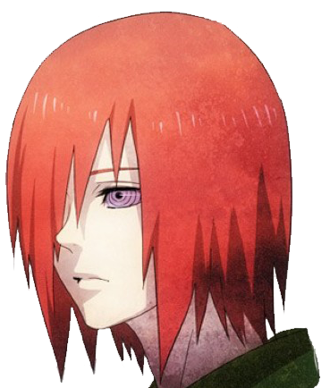

Nagato
Nagato (長門, Nagato) was a shinobi of Amegakure and descendant of the Uzumaki clan. Forming Akatsuki alongside his friends (and fellow war orphans) Yahiko and Konan, Nagato dreamed of bringing peace to the violent shinobi world. However, following Yahiko's death, Nagato adopted the alias of Pain (ペイン, Pein) and, along with Konan, began leading a new Akatsuki — one that would force the world into peace using any means necessary.
BackGround

Nagato lived with his parents: Fusō and Ise on the outskirts of Amegakure. When he was very young, Madara Uchiha secretly transplanted his Rinnegan into Nagato without his or his parents' knowledge. Sometime later, during the Second Shinobi World War, Nagato and his parents took shelter in their home to avoid the fighting going on around them. One day, two Konoha shinobi broke into their home looking for food and Nagato and his parents tried to sneak out unnoticed. When they were discovered, his parents attacked the shinobi so that Nagato could escape. The Konoha ninja killed his parents in self-defence and,  upon realising they were only civilians, tried apologising to Nagato. Overcome with grief, Nagato used Madara's Rinnegan for the first time to kill them and avenge his parents.
upon realising they were only civilians, tried apologising to Nagato. Overcome with grief, Nagato used Madara's Rinnegan for the first time to kill them and avenge his parents.
Critical response to Nagato's character has been generally positive because of the chaos he creates throughout the story, including the murder of Jiraiya and the destruction of an entire village while chasing Naruto. His eventual fight against Naruto has been regarded as one of the best battles in the entire series. This is due not only to the techniques used by both fighters, but because of their interactions in relation to the chaos of wars. Because of this, Kishimoto was able to bring more depth to a series aimed at a young demographic.
After burying his parents, Nagato, now an orphan, was forced to leave home and begin wandering in search of food and shelter. With resources scarce due to the ongoing war, no one he met would help him until Nagato, who had collapsed from hunger, was found by Konan and Yahiko, orphans like himself. They banded together, acquired food to survive through any means, and shared dreams of a future where they were in charge and could use their power to eliminate war. Yahiko was particularly passionate about this point, which inspired Nagato to adopt the same goal. In order to accomplish this, the three would need to become ninja. With few options to choose from, they approached Konoha's Legendary Sannin and asked to be taught ninjutsu. Orochimaru offered to kill them in order to end their suffering, but Jiraiya, guilty over his participation in the war, offered to teach them how to look out for themselves.
Design and Content
Nagato originated from Masashi Kishimoto's desire to elaborate on the ending to the manga series Naruto. While the series was known for its fight scenes and tragedies, the main characters never experienced a war. Once the series began its "second part", simply referred to as Part II in the manga and Shippuden in the anime, Kishimoto felt the need to create a story arc that would emphasize the tragedy of wars, leading to the final arc which would include a war. The principal reason for this was a significant difference between the two main characters, Naruto Uzumaki who had no knowledge of wars, and Sasuke Uchiha who was a victim of one; his entire clan had been annihilated to avoid a potential civil war. As a result, Kishimoto created Nagato as a war victim who would kill Naruto's teacher, Jiraiya, and act as Naruto's nemesis so he would understand the tragedy that Sasuke had experienced. This led to the creation of the series' final arc, the Fourth Great Shinobi War, where Naruto engages in a bigger fight with the remaining member of the terrorist organization
| Uzimaki Nagato | |
|---|---|
|  | |
|
長門 Uzumaki Nagato
Pain (ペイン, Pein) God (神, Kami)[4] Child of the Prophecy (予言の子, Yogen no Ko)[5] Saviour of this World (この世の救世主, Kono Yo no Kyūseishu)[6] Third Six Paths (三人目の六道, Sanninme no Rikudō) |
|
| Manga | mangashui |
| Anime | Mangashui.com |
| Live-Action | Mangashui/live-action.com |
| Also Appears in | |
| Voice Actor | |
| Japanese | |
| English |
|
| Personal | |
| BirthDate | September 19 |
| Sex | Male |
| Age | Part II: 35 |
| Status | Deceased |
| Height | Part II: 175.5 cm |
| Weight | Part II: 40.1 kg |